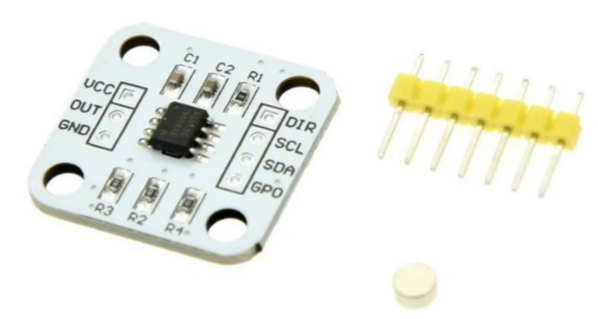
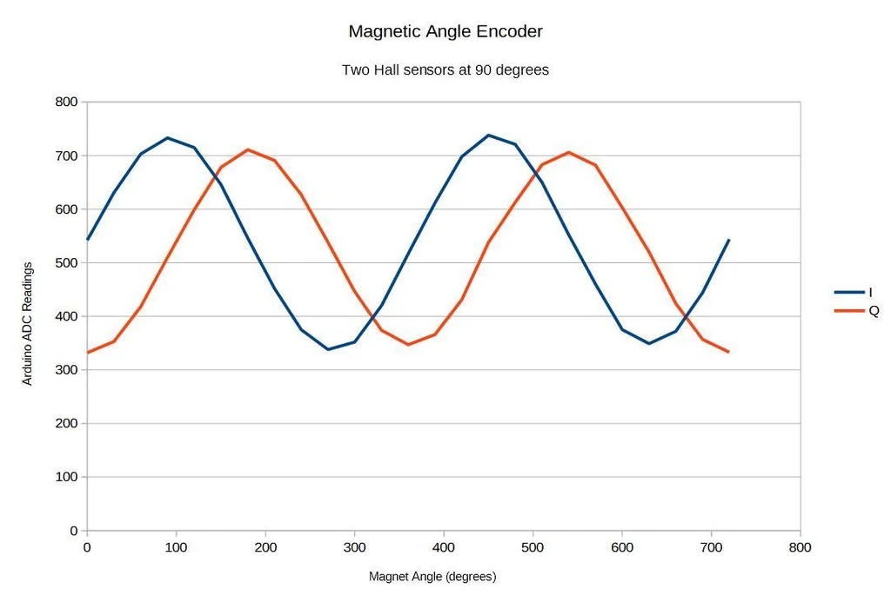
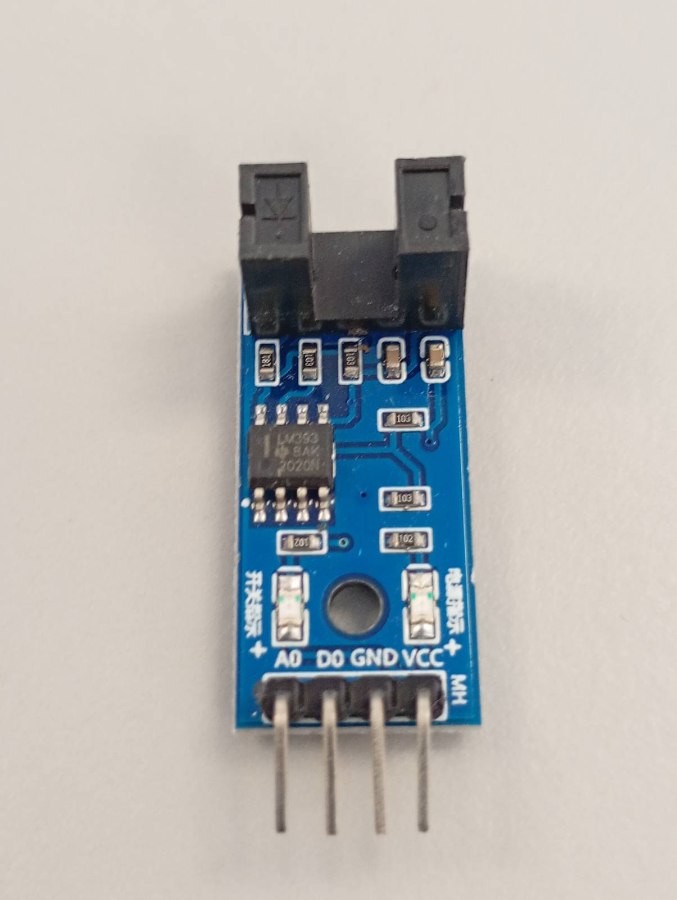

oficina3
oficina3
LEFA Oficina 3 – Laboratório de Estimação e Controlo
LEFA Oficina 3 – Estimation and Control Lab
Projeto 1
Projeto 1: Aeropêndulo
Analogias & números
Aeropendulum (theory)
Motor DC (theory)
Modulo L298N
Máquinas de Estado
Interrupções
Calibração & software modular
Sensor AS5600
Controlador
Controlador PID
Aeropendulum
simulado
Integração
Projeto 2
Carro programável
Project 3
Inverted Pendulum
oficina3
Encoder
View page source
Encoder



to be continued